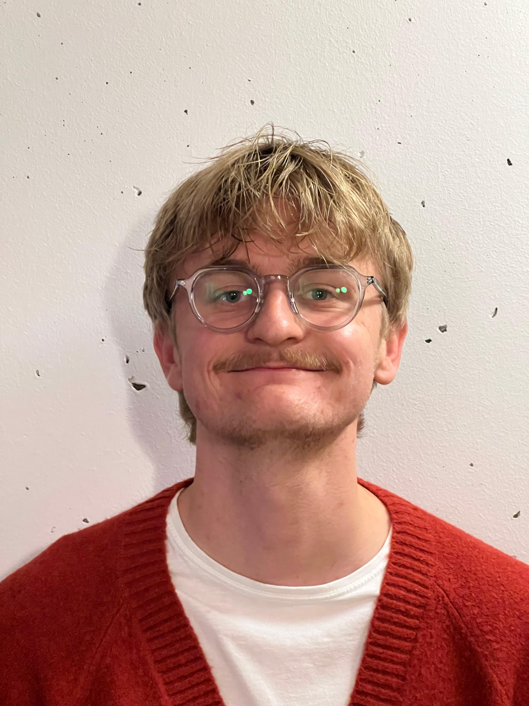

About
A UX designer with a background in media informatics and psychology, so I understand both sides: the technical build, and what users actually need.
What drives me is designing products that feel intuitive and genuinely enjoyable to use from user research and concept work all the way through to interactive prototypes.
That mix comes from studying media informatics with a focus on Human-Computer Interaction in Munich, a semester abroad in Denmark, and now a master's in Mediatechnology specialization in HCI & Human Factors at TU Berlin alongside hands-on UX and web roles where I've shipped real interfaces.
Outside of design you'll usually find me doing sports, sewing, or enjoying food.
Experience
Self-employed
*Starcode · Volunteer
Financial.com · Working student
VISPIRON Systems · Working student
Education
What I do
UX / UI design, responsive web design, interactive prototyping, WebGL / 3D & AI integration.
User research, wireframing, user testing, competitor & task analysis, design-thinking workshops, user-centered design.
Qualitative & quantitative methods, data analysis.
Cognitive ergonomics, human factors, action & cognitive psychology.